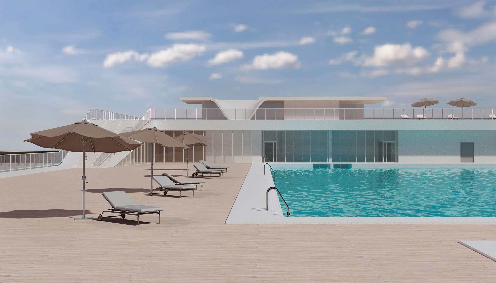
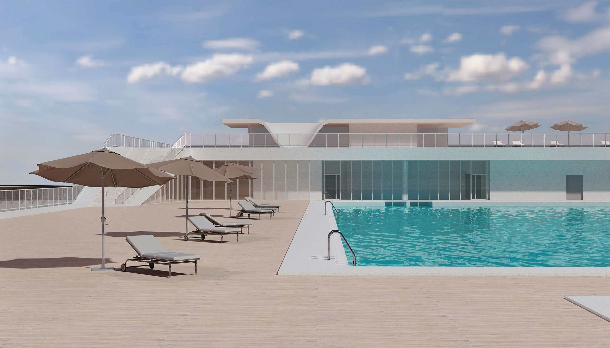

Демонстрационные материалы предоставлены ООО «ИНПРОЕКТ» (г.Санкт-Петербург)
09.11.2022
О ПРОВЕДЕНИИ ОБЩЕСТВЕННЫХ ОБСУЖДЕНИЙ ПРОЕКТНОЙ ДОКУМЕНТАЦИИ ПО ОБЪЕКТУ «БАССЕЙН В ЗАПАДНОЙ ЧАСТИ КРЕСТОВСКОГО ОСТРОВА», ВКЛЮЧАЯ ПРЕДВАРИТЕЛЬНЫЕ МАТЕРИАЛЫ ПО ОЦЕНКЕ ВОЗДЕЙСТВИЯ НА ОКРУЖАЮЩУЮ СРЕДУ
Обществом с ограниченной ответственностью «ТранспроектИнжиниринг» по договору с Акционерным обществом «Зенит-Арена» выполняются работы по оценке воздействия на окружающую среду в составе проектной документации по объекту «Бассейн в западной части Крестовского острова». В соответствии с Федеральным законом от 23.11.1995 № 174-ФЗ «Об экологической экспертизе», Федеральным законом от 31.07.1998 № 155-ФЗ «О внутренних морских водах, территориальном море и прилежащей зоне Российской Федерации» проектная документация по объекту «Бассейн в западной части Крестовского острова» является объектом государственной экологической экспертизы федерального уровня. В связи с чем, в соответствии с приказом Министерства природных ресурсов и экологии Российской Федерации от 01.12.2020 № 999 «Об утверждении требований к материалам оценки воздействия на окружающую среду», постановлением Правительства Российской Федерации от 14.12.2021 № 2284 «О внесении изменений в постановление Правительства Российской Федерации от 3 апреля 2020 г. №440» по объекту государственной экологической экспертизы – проектной документации «Бассейн в западной части Крестовского острова», включая предварительные материалы оценки воздействия на окружающую среду, проводятся общественные обсуждения. Уведомление о проведении указанных общественных обсуждений доступно по ссылке.
04.11.2022
Уважаемые коллеги, друзья и соотечественники, желаем вам крепкого здоровья, мира и добра. Единство народа страны – залог ее силы и благополучия. С праздником!
18.10.2022
Сегодня состоялся Технический совет Комитета по развитию транспортной инфраструктуры Санкт-Петербурга по вопросу рассмотрения предпроектной документации по обоснованию размещения объекта «Вестибюль станции «Театральная» для нужд Санкт-Петербурга (далее – Объект).
Согласно требованиям государственного заказчика, целями данной работы является:
- Определение оптимального местоположения второго вестибюля станции «Театральная» и комплекса подземных сооружений для его организации;
- Определение основных технико-экономических параметров строительства второго вестибюля (стоимость, срок строительства);
- Определение градостроительных и инженерно-технических ограничений размещения объектов метрополитена;
- Сбор исходных данных для последующего проектирования (определение границ землепользования, определение нагрузок на сети инженерно-технического обеспечения, оценка имущественно-правового статуса участков возможного размещения объекта);
- Определение оптимального способа сооружения объекта.
На Техническом совете, состоявшемся в июне 2022 года, были рассмотрены три варианта размещения Объекта, сегодня рассмотрели пять дополнительных вариантов.
По результатам прошедшего Технического совета, Временно исполняющим обязанности председателя Комитета по развитию транспортной инфраструктуры Санкт-Петербурга Федотовым А.М. дано поручение осуществить технико-экономическое сравнение вариантов размещения вестибюля на ул. Декабристов, на участке между домами №37 и №39 и на Лермонтовском пр., д. 1/44.
16.10.2022
Уважаемые коллеги, дорогие друзья! Поздравляем вас с Днем работников дорожного хозяйства! Интересных проектов, реализации самых смелых планов, здоровья, процветания! Коллектив ООО "ТранспроектИнжиниринг"

23.09.2022
ООО «ТранспроектИнжиниринг» завершило разработку предпроектной документации по обоснованию размещения объекта: «Вестибюль № 2 станции «Приморская» для нужд Санкт-Петербурга. В июне 2022 состоялся научно-технический совет Комитета по развитию транспортной инфраструктуры Санкт-Петербурга, на котором было определено размещение второго вестибюля станции метро «Приморская». В результате анализа градостроительных, инженерно-технических, историко-культурных, экологических, социальных и имущественно-правовых условий и ограничений, выполненных расчетов и анализа пассажирских потоков на три расчетных периода (с 1-го по 10-й год эксплуатации, с 11-го по 20-й год эксплуатации, 20-й год эксплуатации), выбран вариант размещения объекта на участке ул. Беринга, напротив домов №36 и №38. Также в предпроектной документации определены технико-экономические параметры строительства объекта, выполнена проработка узла примыкания комплекса сооружений второго входа/выхода станции «Приморская» к действующей станции «Приморская». Планируемый срок начала эксплуатации – 2027 год. Следующая стадия – разработка документации по планировке территории для размещения объекта.
05.06.2022
Ежегодно, 5 июня, отмечается Всемирный день окружающей среды. День эколога — профессиональный праздник всех российских защитников природы, специалистов по охране окружающей среды, общественных деятелей и экологов-активистов. «День эколога» в России был учрежден Указом Президента РФ Владимира Путина 21 июля 2007 года по инициативе Комитета по экологии Государственной думы РФ.